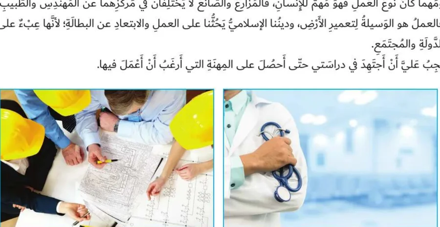

بِطاقَةُ الْمَصادِرِ وَالْمَفاهيمِ: الْميزانِيَّةُ الشَّخْصِيَّةُ (أ): الدَّخْلُ
الدِّراساتُ الِاجْتِماعِيَّةُ · الصَّفُّ الرّابِعُ · ص 13–16
لِلْجَميعِ

الدَّخْلُ هُوَ النُّقودُ الَّتي تَحْصُلُ عَلَيْها الْأُسْرَةُ عَنْ طَريقِ الْعَمَلِ، وَهُوَ وَسيلَةٌ لِشِراءِ الْأَشْياءِ الَّتي نَحْتاجُها وَتَلْبِيَةِ الْحاجاتِ الضَّرورِيَّةِ، وَيَحْصُلُ الْأَفْرادُ عَلَيْهِ مُقابِلَ أَعْمالِهِمْ في الزِّراعَةِ وَالصِّناعَةِ وَالْخِدْماتِ.📖 أَقْرَأُ النَّصَّ
إِنَّ النُّقودَ الَّتي تَحْصُلُ عَلَيْها أُسْرَتُكَ عَنْ طَريقِ الْعَمَلِ تُسَمّى الدَّخْلَ، وَيُعَدُّ الدَّخْلُ وَسيلَةً مُهِمَّةً لِشِراءِ الْأَشْياءِ الَّتي تَحْتاجُها وَتَلْبِيَةِ الْحاجاتِ الضَّرورِيَّةِ. فَالدَّخْلُ يُعَدُّ أَساسَ الْحَياةِ الِاقْتِصادِيَّةِ عَلى مَرِّ الْعُصورِ وَالْأَزْمانِ، وَهُوَ مُؤَشِّرٌ لِتَقَدُّمِ الدُّوَلِ. وَيَحْصُلُ الْأَفْرادُ عَلى الدَّخْلِ مُقابِلَ أَعْمالِهِمْ، فَيَعْمَلُ بَعْضُهُمْ في الزِّراعَةِ أَوِ الصِّناعَةِ، وَيَعْمَلُ بَعْضُهُمْ في أَعْمالٍ تُقَدِّمُ الْمُساعَدَةَ لِلنّاسِ وَتُسَمّى الْخَدَماتِ.
كِتابي ص 13–16
📘 كَلِماتي
الدَّخْلُ
النُّقودُ الَّتي تَحْصُلُ عَلَيْها الْأُسْرَةُ عَنْ طَريقِ الْعَمَلِ.
الْخَدَماتُ
أَعْمالٌ تُقَدَّمُ لِلنّاسِ مِثْلُ التَّعْليمِ وَالطِّبِّ وَالسِّياحَةِ.
الْحاجاتُ الضَّرورِيَّةُ
ما لا نَسْتَغْني عَنْهُ كَالطَّعامِ وَالْمَلْبَسِ وَالْمَسْكَنِ.
الْمِهْنَةُ
الْعَمَلُ الَّذي يَتْقِنُهُ الْإِنْسانُ وَيَكْسِبُ مِنْهُ.
💡 تَعَلَّمْتُ
💵الدَّخْلُ: النُّقودُ الَّتي تَحْصُلُ عَلَيْها أُسْرَتُكَ عَنْ طَريقِ الْعَمَلِ، وَهُوَ وَسيلَةٌ لِشِراءِ الْأَشْياءِ الَّتي تَحْتاجُها.
🧺وَأَهَمِّيَّتُهُ: شِراءُ الْحاجاتِ، وَتَحْقيقُ الرَّفاهِيَةِ وَتَلْبِيَةُ الْمَطالِبِ الْيَوْمِيَّةِ لِلْأَفْرادِ.
👨🌾يَحْصُلُ الْأَفْرادُ عَلى الدَّخْلِ مُقابِلَ أَعْمالِهِمْ: فَبَعْضُهُمْ يَعْمَلُ في الزِّراعَةِ أَوِ الصِّناعَةِ، وَبَعْضُهُمْ يُقَدِّمُ الْخَدَماتِ كَالتَّعْليمِ وَالطِّبِّ وَالسِّياحَةِ.
📈وَكُلَّما زادَ دَخْلُ الْفَرْدِ ازْدادَ ما يَسْتَهْلِكُهُ، وَالْعَمَلُ هُوَ أَساسُ الْحَياةِ الَّتي نَعيشُها.
✅ أُطَبِّقُ
☐أَسْأَلُ أُسْرَتي عَنْ أَعْمالٍ يَكْسِبُ مِنْها النّاسُ رِزْقَهُمْ.
☐أُكْمِلُ كِتابي ص 16.
🇦🇪 وَطَني: الْعَمَلُ قيمَةٌ، وَوَطَني يُكَرِّمُ كُلَّ عامِلٍ مُتْقِنٍ.
🏅 أَفْهَمُ دَخْلَ أُسْرَتي